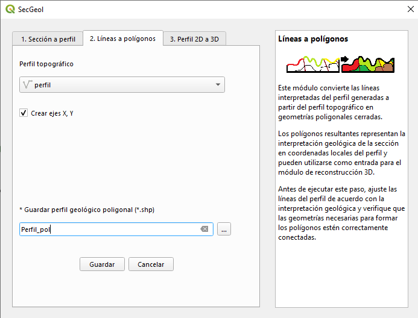
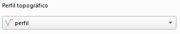
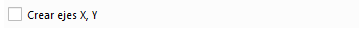

Fase 2. Vista general de la herramienta

Selección del perfil interpretado
En esta fase se utiliza el perfil obtenido durante la Fase 1, una vez realizada la interpretación geológica mediante líneas.

SecGeol utiliza estas líneas para delimitar las diferentes unidades interpretadas y generar un nuevo perfil constituido por polígonos.
Ejes de referencia

De manera opcional, puede activarse la generación de una capa adicional de ejes de referencia. Esta salida se identifica mediante el sufijo _ejes.
La capa contiene divisiones expresadas en metros a lo largo de los ejes del perfil y puede utilizarse como referencia para interpretar las distancias y elevaciones representadas en la sección.
Perfil geológico poligonal de salida
Como resultado del proceso, SecGeol genera un perfil geológico compuesto por polígonos que representan las unidades delimitadas durante la interpretación.
Los polígonos que se encuentran en contacto con el perfil topográfico conservan la información geológica incorporada durante la Fase 1, cuando ésta se encuentra disponible.
Los polígonos interpretados en profundidad que no tienen contacto con el perfil topográfico se generan sin una unidad geológica asignada. Estos valores pueden incorporarse posteriormente mediante la edición de la tabla de atributos de la capa resultante.